Useful for numeric, date, and date-time scales.
Arguments
- width
Distance between each break. Either a number, or for date/times, a single string of the form
"{n} {unit}", e.g. "1 month", "5 days". Unit can be of one "sec", "min", "hour", "day", "week", "month", "year".- offset
Use if you don't want breaks to start at zero, or on a conventional date or time boundary such as the 1st of January or midnight. Either a number, or for date/times, a single string of the form
"{n} {unit}", as forwidth.offsetcan be a vector, which will accumulate in the order given. This is mostly useful for dates, where e.g.c("3 months", "5 days")will offset by three months and five days, which is useful for the UK tax year. Note that due to way that dates are rounded, there's no guarantee thatoffset = c(x, y)will give the same result asoffset = c(y, x).
Examples
demo_continuous(c(0, 100))
#> scale_x_continuous()
demo_continuous(c(0, 100), breaks = breaks_width(10))
#> scale_x_continuous(breaks = breaks_width(10))
demo_continuous(c(0, 100), breaks = breaks_width(20, -4))
#> scale_x_continuous(breaks = breaks_width(20, -4))
demo_continuous(c(0, 100), breaks = breaks_width(20, 4))
#> scale_x_continuous(breaks = breaks_width(20, 4))
# This is also useful for dates
one_month <- as.POSIXct(c("2020-05-01", "2020-06-01"))
demo_datetime(one_month)
#> scale_x_datetime()
 demo_datetime(one_month, breaks = breaks_width("1 week"))
#> scale_x_datetime(breaks = breaks_width("1 week"))
demo_datetime(one_month, breaks = breaks_width("5 days"))
#> scale_x_datetime(breaks = breaks_width("5 days"))
demo_datetime(one_month, breaks = breaks_width("1 week"))
#> scale_x_datetime(breaks = breaks_width("1 week"))
demo_datetime(one_month, breaks = breaks_width("5 days"))
#> scale_x_datetime(breaks = breaks_width("5 days"))
 # This is so useful that scale_x_datetime() has a shorthand:
demo_datetime(one_month, date_breaks = "5 days")
#> scale_x_datetime(date_breaks = "5 days")
# hms times also work
one_hour <- hms::hms(hours = 0:1)
demo_time(one_hour)
#> scale_x_time()
# This is so useful that scale_x_datetime() has a shorthand:
demo_datetime(one_month, date_breaks = "5 days")
#> scale_x_datetime(date_breaks = "5 days")
# hms times also work
one_hour <- hms::hms(hours = 0:1)
demo_time(one_hour)
#> scale_x_time()
 demo_time(one_hour, breaks = breaks_width("15 min"))
#> scale_x_time(breaks = breaks_width("15 min"))
demo_time(one_hour, breaks = breaks_width("600 sec"))
#> scale_x_time(breaks = breaks_width("600 sec"))
# Offets are useful for years that begin on dates other than the 1st of
# January, such as the UK financial year, which begins on the 1st of April.
three_years <- as.POSIXct(c("2020-01-01", "2021-01-01", "2022-01-01"))
demo_datetime(
three_years,
breaks = breaks_width("1 year", offset = "3 months")
)
#> scale_x_datetime(breaks = breaks_width("1 year", offset = "3 months"))
# The offset can be a vector, to create offsets that have compound units,
# such as the UK fiscal (tax) year, which begins on the 6th of April.
demo_datetime(
three_years,
breaks = breaks_width("1 year", offset = c("3 months", "5 days"))
)
#> scale_x_datetime(breaks = breaks_width("1 year", offset = c("3 months",
#> "5 days")))
demo_time(one_hour, breaks = breaks_width("15 min"))
#> scale_x_time(breaks = breaks_width("15 min"))
demo_time(one_hour, breaks = breaks_width("600 sec"))
#> scale_x_time(breaks = breaks_width("600 sec"))
# Offets are useful for years that begin on dates other than the 1st of
# January, such as the UK financial year, which begins on the 1st of April.
three_years <- as.POSIXct(c("2020-01-01", "2021-01-01", "2022-01-01"))
demo_datetime(
three_years,
breaks = breaks_width("1 year", offset = "3 months")
)
#> scale_x_datetime(breaks = breaks_width("1 year", offset = "3 months"))
# The offset can be a vector, to create offsets that have compound units,
# such as the UK fiscal (tax) year, which begins on the 6th of April.
demo_datetime(
three_years,
breaks = breaks_width("1 year", offset = c("3 months", "5 days"))
)
#> scale_x_datetime(breaks = breaks_width("1 year", offset = c("3 months",
#> "5 days")))
